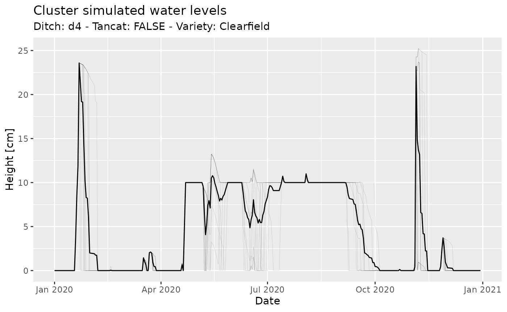

Introduction
This document illustrates the simulation workflow of ERAHUMED. Specifically, we will cover:
- How to setup and run a simulation.
- How to extract and analyze simulation results.
This guide is addressed to users working with the command-line (i.e. R) interface of erahumed.
Bird’s eye view
Running a ERAHUMED simulation involves several layers of computation, which we formalize through the concept of simulation layers. Concretely, simulations are composed of the following layers:
- INP: INPut data.
- HBA: Hydrological Balance of the Albufera lake.
- HBP: Hydrological Balance of rice Paddy clusters.
- CA: Chemical Applications.
- CT: Chemical Transport.
Each layer depends on the previous ones and is a dependency of the subsequent ones (in the order above). The goal of the following sections is to teach you how to operate with simulations and layers in erahumed.
The simulation workflow
We can create a new simulation with:
s <- erahumed_simulation()
s
#> An ERAHUMED simulation.
#> Computed layers: NoneThe object s is, behind the scenes, an R list that
contains simulation layers. The list of ERAHUMED layers can be obtained
through:
erahumed_layers()
#> [1] "inp" "hba" "hbp" "ca" "ct"We can extract individual layers as follows:
get_layer(s, "hba") # Extract the HBA layer
#> A ERAHUMED HBA simulation layer.
#>
#> Output columns:As revealed by the outputs above, the layers of the simulation are
not yet computed at this stage. This is so because the only result of
erahumed_simulation() is to initialize a
simulation, using default values for the parameters required by the
various simulation layers. We show in the following how to setup
individual layers, run the simulation and extract results.
Setup
Setup of individual layers is achieved through the family of
setup_*() functions, that receive a simulation as input,
and return a simulation with the updated setup.
For instance, to configure the height threshold parameter used in HBP
layer computations (see ?setup_hbp), we would use:
s <- setup_hbp(s, height_thresh_cm = 1) Similarly, to limit the date range of the simulation, we can provide
a filteredoutflows_df data-set to the INP layer:
outflows_df <- albufera_outflows |>
(\(.) .["2020-01-01" <= .$date & .$date <= "2020-12-31", ])()
s <- setup_inp(s, outflows_df = outflows_df)The available parameters for each layer are the arguments of the
corresponding setup_*() function, and the default values
set by erahumed_simulation() correspond to the defaults of
the setup_*() arguments. The current layer parameters of a
simulation can be obtained through:
get_layer_parameters(s, "ct") # Get parameters of CT layer
#> $drift
#> [1] 0
#>
#> $covmax
#> [1] 0.5
#>
#> $jgrow
#> [1] 152
#>
#> $SNK
#> [1] 0
#>
#> $dact_m
#> [1] 0.1
#>
#> $css_ppm
#> [1] 50
#>
#> $foc
#> [1] 0.17
#>
#> $bd_g_cm3
#> [1] 1.5
#>
#> $qseep_m_day
#> [1] 0
#>
#> $wilting
#> [1] 0.24
#>
#> $fc
#> [1] 0.35Run
Once we are ready with our simulation setup, we can compute the
various layers, using the run_simulation() function. In
order to speed up iterations,
erahumed gives you the option to compute just a specific
layer with all its upstream dependencies. For example:
s <- run_simulation(s, layer = "hbp")
s
#> An ERAHUMED simulation.
#> Computed layers: inp, hba, hbpwould compute only the INP, HBA and HBP layers. If you simply want to compute all layers, you can just call:
s <- run_simulation(s)
s
#> An ERAHUMED simulation.
#> Computed layers: inp, hba, hbp, ca, ct(notice that this will not recompute the INP, HBA and HBP layers, since these results are already stored in the input simulation object).
Analyse
Once we have setup and ran a simulation, we want to analyse its
result, which will be essentially time-series data-sets (possibly with a
spatial component identified by a cluster_id).
You can extract the output (a data.frame) of a given
layer as follows:
hbp_df <- get_layer_output(s, "hbp") # Get output data.frame of HBP layer
head(hbp_df)
#> ideal_height_eod_cm ideal_irrigation ideal_draining petp_cm area_m2
#> 1 20 TRUE TRUE -0.058 114881.78
#> 2 20 TRUE TRUE -0.058 116539.90
#> 3 20 TRUE TRUE -0.058 154730.35
#> 4 20 TRUE TRUE -0.058 163789.56
#> 5 20 TRUE TRUE -0.058 83016.51
#> 6 20 TRUE TRUE -0.058 106260.07
#> capacity_m3_s date cluster_id ditch seed_day tancat
#> 1 0.06004514 2020-01-01 02_Carrera_del_Saler0-2_0 d2 -110 TRUE
#> 2 0.06004514 2020-01-01 03_Petxinar0-3_2 d2 -110 TRUE
#> 3 0.06004514 2020-01-01 03_Petxinar0-3_3 d2 -110 TRUE
#> 4 0.06004514 2020-01-01 03_Petxinar1-3_1 d2 -110 TRUE
#> 5 0.06004514 2020-01-01 03_Petxinar1-3_2 d2 -110 TRUE
#> 6 0.06004514 2020-01-01 03_Petxinar1-3_3 d2 -110 TRUE
#> variety height_sod_cm irrigation draining ideal_diff_flow_cm
#> 1 J.Sendra 20 TRUE TRUE 0.058
#> 2 J.Sendra 20 TRUE TRUE 0.058
#> 3 Bomba 20 TRUE TRUE 0.058
#> 4 Bomba 20 TRUE TRUE 0.058
#> 5 J.Sendra 20 TRUE TRUE 0.058
#> 6 Clearfield 20 TRUE TRUE 0.058
#> ideal_inflow_cm ideal_outflow_cm outflow_m3_s outflow_cm inflow_cm
#> 1 5 4.942 0 0 0.058
#> 2 5 4.942 0 0 0.058
#> 3 5 4.942 0 0 0.058
#> 4 5 4.942 0 0 0.058
#> 5 5 4.942 0 0 0.058
#> 6 5 4.942 0 0 0.058
#> inflow_m3_s height_eod_cm plan_delay
#> 1 0.0007711971 20 0
#> 2 0.0007823281 20 0
#> 3 0.0010386991 20 0
#> 4 0.0010995133 20 0
#> 5 0.0005572868 20 0
#> 6 0.0007133199 20 0From here on, the analysis may proceed in the way you find more
convenient. For instance, in the chunk below I create a plot of water
levels for a set of clusters with similar features, using
dplyr and ggplot2:
library(dplyr)
library(ggplot2)
ditch <- "d4"
tancat <- FALSE
variety <- "Clearfield"
clusters_df <- hbp_df |>
filter(ditch == !!ditch, tancat == !!tancat, variety == !!variety)
avg_df <- clusters_df |>
group_by(date) |>
summarise(height_eod_cm = mean(height_eod_cm))
ggplot() +
geom_line(
data = clusters_df,
mapping = aes(x = date, y = height_eod_cm, group = cluster_id),
color = "black", linewidth = 0.1, alpha = 0.2) +
geom_line(
data = avg_df,
mapping = aes(x = date, y = height_eod_cm),
color = "black"
) +
xlab("Date") + ylab("Height [cm]") +
ggtitle("Cluster simulated water levels",
paste("Ditch:", ditch, "- Tancat:", tancat, "- Variety:", variety)
)
Predefined plotting methods
erahumed comes equipped with a few basic plotting
methods that return interactive visualizations of the various model
layers. These can be used by accessing the relevant model layer through
get_layer(), for example:
The documentation of the various plotting methods can be found under
?plot.erahumed_<layer_name>, e.g.
?plot.erahumed_hba.
Further information
TODO. Further details will appear in this and possibly other vignettes. For specific problems, you can file an issue on Github.